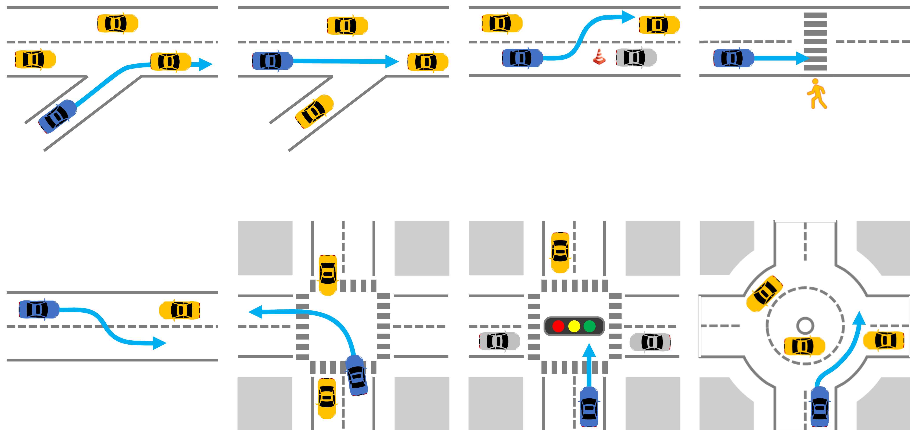
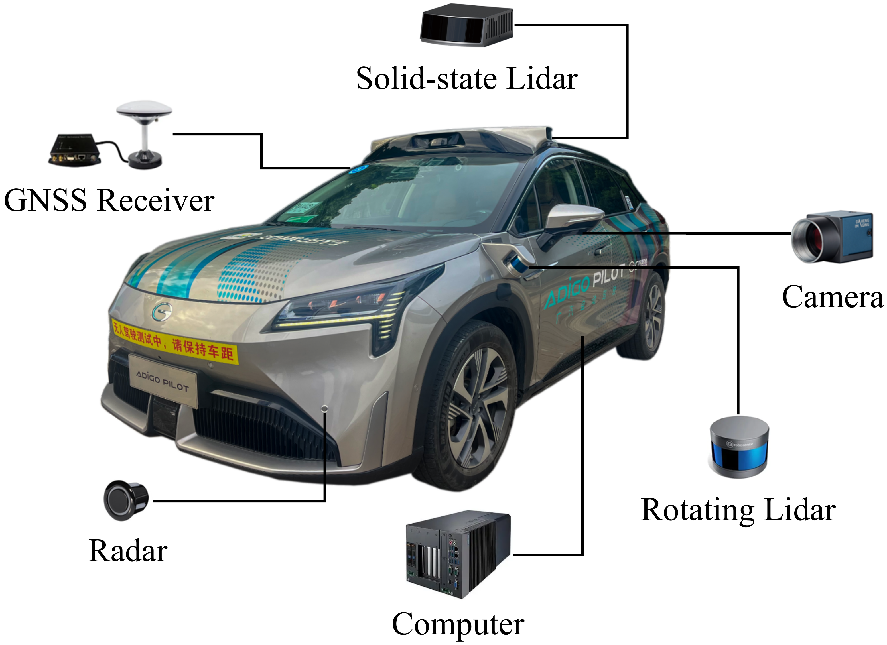

Method Overview
In this paper, we propose a novel optimization-based trajectory planning framework that directly handles environmental elements and provides heuristic behavior constraints at the spatiotemporal drivable domain level, then efficiently and robustly generates trajectories for specified behaviors through progressive optimization. Firstly, considering the tactical decision patterns for various environmental elements, we divide the spatiotemporal drivable domain of the ego vehicle into different spatiotemporal domain cells, referred to as Behavior Cells (BCs). By combining BCs, we rapidly enumerate a finite set of feasible candidate behaviors. Since BCs simultaneously consider the vehicle's tactical decisions regarding environmental elements and its motion capabilities, behaviors represented by BCs combinations not only can provide collision-free constraints for optimization but also contain the concrete representation of drivability performance. This brings two benefits: on one hand, unreasonable behaviors can be quickly filtered out based on the characteristics of the spatiotemporal drivable domains; on the other hand, it allows us to evaluate and select behaviors directly at the spatiotemporal drivable domain level, enabling to robustly and efficiently provide feasible behavior guidance for trajectory optimization. Finally, we propose a dynamic two-stage optimization algorithm, leveraging a mixed-integer quadratic programming (MIQP) stage and a nonlinear programming (NLP) stage, to progressively satisfy requirements such as kinematics, smoothness, and safety, achieving high efficiency and convergence rates in trajectory generation within the selected BCs combinations. We validate our algorithm in various simulated and real-world urban traffic scenarios. The results demonstrate that our framework can robustly and efficiently generate high-quality trajectories in different traffic densities.

Overview of the proposed method. (a) Considering the vehicle's motion capabilities, the spatiotemporal domain is partitioned into different modularized drivable domains with behavior semantics, referred to as BCs, \(\mathfrak{B}^{{\pi},i}\), to represent the tactical decisions for various environmental elements on different lanes \(\pi \in \{\mathsf{l},\mathsf{c},\mathsf{r}\}\). (b) By combining the topologically adjacent BCs, all feasible behaviors and their corresponding spatiotemporal drivable domains \(\mathfrak{C}^{i}\) are synchronously enumerated. (c) Each behavior is modeled and evaluated using the FHMDP at the spatiotemporal drivable domain level, and the optimal behavior is provided as heuristic behavioral constraints for trajectory generation. (d) Trajectories are generated progressively within the spatiotemporal drivable domain of the selected behavior through a MIQP and a NLP stage.
RESULTS
Simulations
 We developed a proprietary simulator based on the CommonRoad benchmark to conduct the experiments. The simulation scenarios were derived from publicly released datasets such as NGSIM, OpenStreetMaps (OSM), and partially hand-crafted datasets. To validate the effectiveness and generalizability of our method, our simulation tests were conducted in 8 typical urban driving scenario categories including on-ramp merging, other vehicle merging, static obstacle avoiding, pedestrian crossing, oncoming traffic, unsignalized intersections, signalized intersections, roundabouts.
Ramp Merging
Other Vehicles Converge
Static Obstacle Avoiding
Oncoming Traffic
Pedestrian Crossing
Unsignalized Intersections1
Signalized Intersection1
Roundabout
Dense Road Section
[CommonRoad: USA_US101-13_5_T-1]
T-intersection
[CommonRoad: DEU_Flensburg-63_1_T-1]
Unsignalized Intersections2
[CommonRoad: USA_Peach-2_1_T-1]
Signalized Intersection2
[CommonRoad: USA_Peach-4_2_T-1]
Experiments
 The experiments rely on the L4-level autonomous driving vehicle, ADIGO PILOT, developed by GAC Group (see in the right figture). ADIGO PILOT is equipped with a sensing suite,including eight cameras, four solid-state lidars, two rotating lidars, six radars, and a fusion positioning system. We integrated the proposed framework into ADIGO PILOT and calculated the trajectory in real-world traffic scenarios based on the perception results from the onboard sensor suites. To demonstrate the effectiveness, flexibility, and robustness of the proposed method, we provide two representative cases to illustrate the performance of our algorithm.